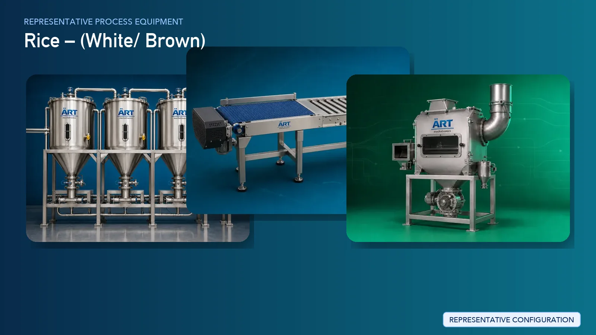

Rice Processing Plant & Machinery Solutions (Paddy to Finished Rice Milling Systems)
Rice processing is one of the most essential agro-processing industries globally, converting raw paddy into clean, polished, and graded rice suitable for consumption and export. The process requires efficient cleaning, precise dehusking, controlled whitening, polishing, and grading to achieve…

About Rice Processing Plant & Machinery Solutions processing
ART Mechatronics provides complete turnkey solutions for rice processing plants, offering advanced systems for paddy cleaning, husk removal, whitening, polishing, grading, and packaging. Our solutions are designed for high-capacity continuous production, minimal grain breakage, and premium export-quality rice.
Complete Rice Process Flow
Raw paddy is received and fed into the processing system.
Ensures smooth and continuous input.
Paddy is cleaned to remove large impurities such as straw, dust, and husk.
Ensures removal of coarse impurities.
Further cleaning removes stones, sand, and fine impurities.
Ensures:
- Product purity
- Equipment protection
Outer husk is removed from paddy to obtain brown rice.
Produces:
- Brown rice
- Husk (by-product)
Unhusked paddy is separated from brown rice.
Ensures efficient reprocessing of unhulled grains.
Brown rice is milled to remove bran layers.
Produces:
- White rice
- Rice bran (valuable by-product)
Rice is polished to enhance appearance and quality.
Ensures:
- Smooth surface
- Premium finish
Rice is graded based on size and quality.
Produces:
- Full grain rice
- Broken rice
Directly impacts pricing and export value.
Moisture is controlled for storage stability.
Ensures longer shelf life.
Dust and husk particles are controlled. Systems Used:
Ensures:
- Clean plant environment
- Worker safety
Final inspection ensures consistent product quality.
Processed rice is packed into bags or retail packs.
Suitable for:
- Bulk export
- Retail distribution
Types of Rice Processed
- Basmati Rice
- Non-Basmati Rice
- Parboiled Rice
- Raw Rice
- Brown Rice
- Polished White Rice
Machinery Required for Rice Processing Plant
- Intake Hopper
- Material Handling Systems
- Pre Cleaner
- Destoner
- Air Classifier
- Magnetic Separator
- Paddy Dehusker
- Paddy Separator
- Rice Whitener
- Rice Polisher
- Grading Machine / Length Grader
- Color Sorter
- Dryer
- Dust Collection System
- Packaging Machines
Turnkey Rice Mill Solutions
ART Mechatronics offers complete turnkey solutions for rice processing plants, including:
- Process design & plant layout
- Cleaning and dehusking systems
- Milling and polishing systems
- Grading and sorting systems
- Drying systems
- Dust control & air handling systems
- Automation & control panels
- Packaging line integration
- Installation & commissioning
- After-sales support
We customize solutions based on:
- Rice variety
- Production capacity
- Desired quality
- Automation level
Why Choose Art Mechatronics
- Expertise in large-scale rice milling systems
- High efficiency with minimal grain breakage
- Advanced polishing and grading technology
- Energy-efficient plant design
- Consistent product quality
- Global export capability
Machinery in a Rice Processing Plant & Machinery Solutions plant
Where it's used
Get pricing & specs for the Rice Processing Plant & Machinery Solutions plant
Share the product, target capacity, current process and plant location. These details help our engineers discuss the right machine or line configuration.
One partner, from design to start-up
ART Mechatronics designs, manufactures, installs and commissions your Rice Processing Plant & Machinery Solutions solution with regional presence in India, UAE and Thailand.